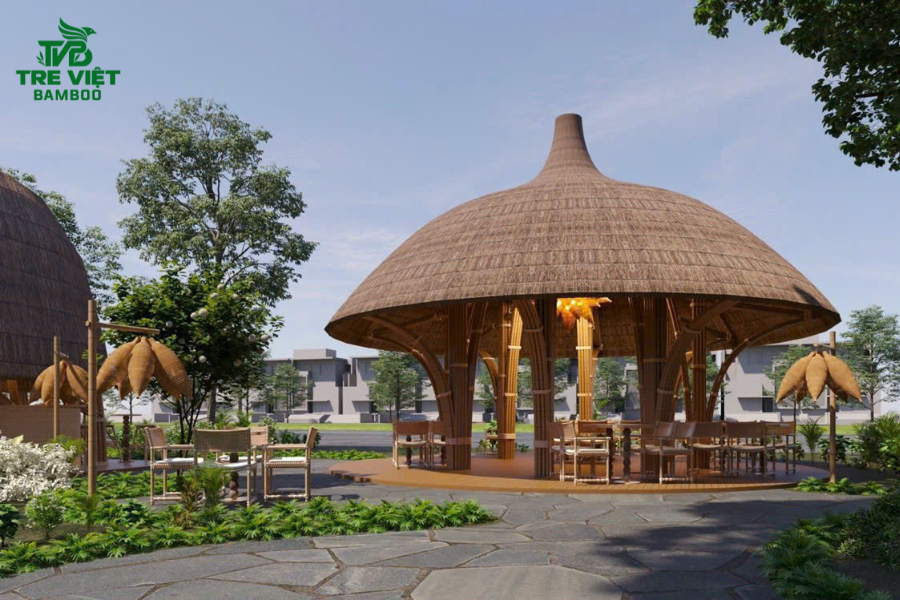
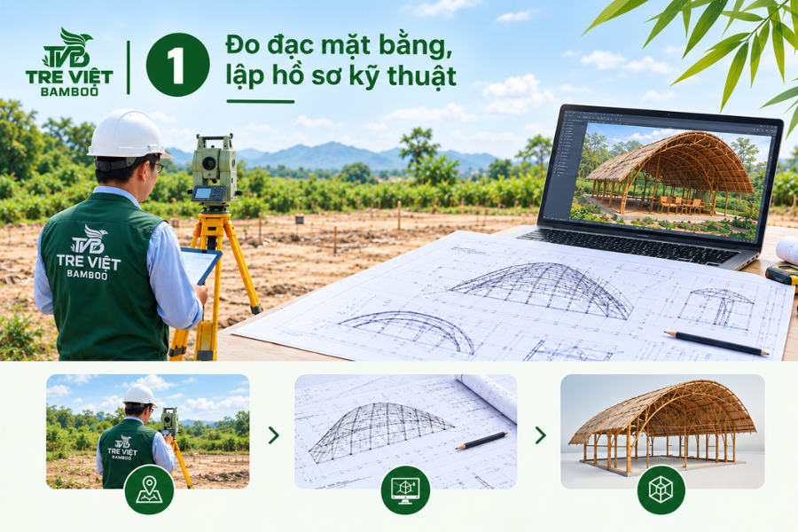
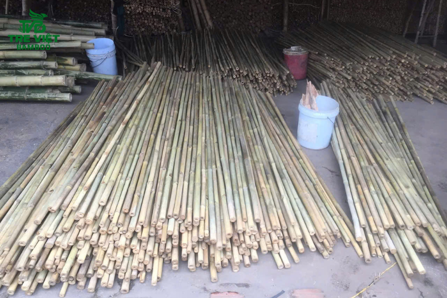
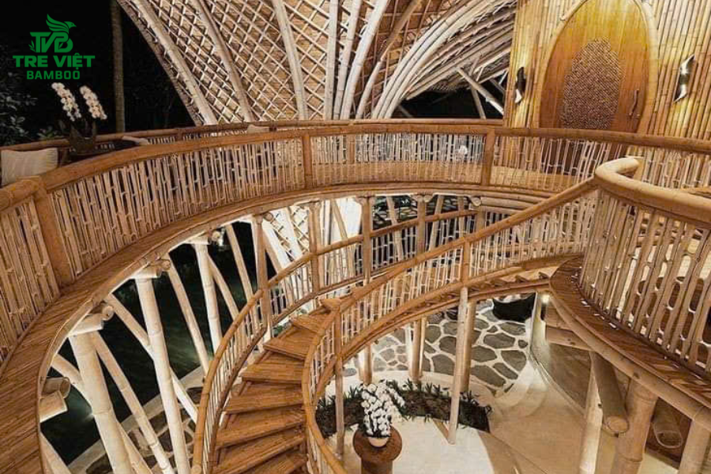
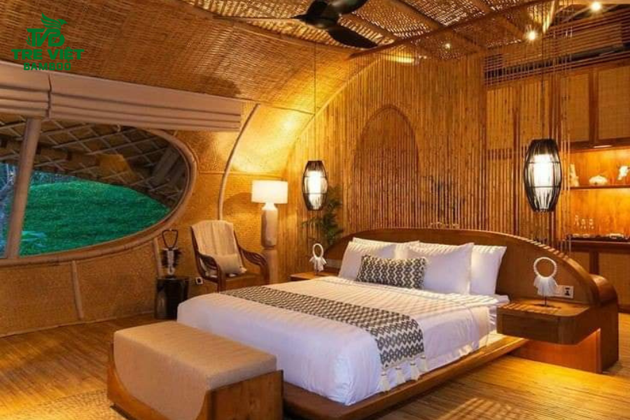
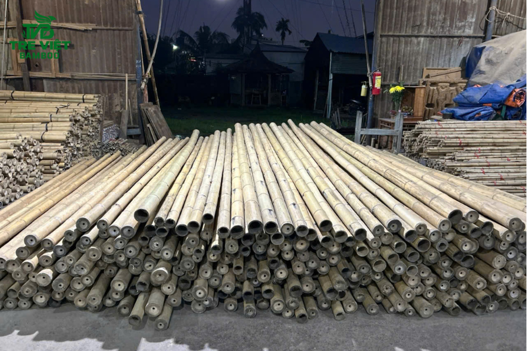

Giữa lòng đô thị hiện đại ngổn ngang bê tông và kính, xu hướng tìm về các không gian xanh, đơn thuần, mộc mạc lại đang trở thành sự lựa chọn ưu tiên hàng đầu của rất người người. Những quán cà phê sân vườn, homestay nghỉ dưỡng, spa, nhà hàng, resort mang đậm phong cách truyền thống đều đang hướng đến các vật liệu tự nhiên để tạo nên dấu ấn riêng. Trong đó, thi công tre trúc đang là giải pháp kiến trúc thời thượng, đỉnh cao, vừa mang lại vẻ đẹp độc bản, vừa giữ được sự vững chãi theo thời gian. Tại Tre Việt Building, chúng tôi chuyên cung cấp dịch vụ thi công công trình tre trúc trọn gói với quy trình bài bản, biến mọi ý tưởng thành hiện thực đầy nghệ thuật. Theo dõi bài viết để biết thêm chi tiết nhé!
Giá trị độc đáo từ các công trình thi công tre trúc hiện đại
Chẳng phải ngẫu nhiên mà tre trúc lại vượt qua rất nhiều loại vật liệu công nghiệp hiện đại để có thể chiếm lĩnh thị trường kiến trúc xanh. Và sau đây là những giá trị nổi bật có thể kể đến:
- Giá trị kinh tế và sinh thái bền vững: Nguồn nguyên liệu tự nhiên, vật liệu Việt này mang lại hiệu quả kinh tế cao nhờ vào thời gian sinh trưởng ngắn, khả năng tái sinh nhanh chóng cùng tính sẵn có dồi dào, phong phú tại địa phương.
- Tính dẻo dai và khả năng chịu lực hiệu quả: Tre Việt sau khi được tuyển chọn, xử lý bài bản đúng kỹ thuật thì sẽ có độ bền cơ học và sức chịu uốn cực kỳ cao, cực kỳ linh hoạt, dẻo dai trước mọi điều kiện thời tiết khắc nghiệt.
- Không gian điều hòa tự nhiên: Điều này rõ ràng có thể thấy. Kiến trúc tre trúc luôn mang đến một cảm giác mát mẻ, thoải mái, dễ chịu vào mùa hè oi bức và ấm áp vào mùa đông. Có được điều đó là nhờ vào đặc tính cách nhiệt của thân tre rỗng ruột.
- Nghệ thuật tạo hình không giới hạn: Sự mềm mại, uyển chuyển của thân tre cho phép các kiến trúc sư sáng tạo nên những đường cong mang đậm hồn quê, văn hóa Việt. Đây là một trong những điều quan trọng mà các vật liệu cứng nhắc khó lòng thay thế được.
Quy trình thi công tre trúc thực chiến, chuẩn kỹ thuật tại Tre Việt Building
Để có được một công trình tre trúc vừa đẹp bền, an toàn, chất lượng thì đội ngũ kỹ thuật của Tre Việt Building luôn đảm bảo tuân thủ nghiêm ngặt quy trình 5 giai đoạn thi công thực chiến ngay sau đây.
Đo đạc mặt bằng, lập hồ sơ kỹ thuật

Khác với lối xây dựng, thi công thông thường, tre là loại vật liệu có sự không đồng nhất về độ dài, kích thước. Vì thế, kỹ sư của chúng tôi sẽ tiến hành đo đạc địa hình thực tế một cách cực kỳ tỉ mỉ. Dựa trên bản vẽ thiết kế 3D, chúng tôi lập hồ sơ để bóc tách khối lượng, tính toán thật chuẩn, thật chính xác khẩu độ, độ uốn cong và sơ đồ chịu lực của từng cụm tre, nhằm đảm bảo sự toàn toàn tuyệt đối.
Tiền chế vật liệu tre trúc

Để tối ưu thời gian ở trên công trường, tất cả các nguồn nguyên vật liệu sẽ đều được chúng tôi tuyển chọn kỹ lưỡng và xử lý tiền chế tại chính xưởng của Tre Việt Building. Cụ thể chúng tôi tiến hành như sau:
- Phân loại tre theo kích thước và mục đích sử dụng.
- Áp dụng loạt công nghệ xử lý như ngâm tẩm chống mối mọt chuyên sâu, sấy khô tre trúc đến độ ẩm chuẩn chỉnh.
- Cắt gọt chiều dài, chiều rộng, đục mộng, khoan lỗ chốt theo đúng hồ sơ bản vẽ kỹ thuật trước khi vận chuyển vật liệu đến công trình.
Lắp dựng cốt thép của nhà tre
Trong quy trình thi công tre trúc trọn gói, bền đẹp tại Tre Việt Building thì bước dựng hệ khung sườn này được chúng tôi đánh giá là quan trọng nhất, bởi vì nó trực tiếp quyết định đến độ vững chãi của công trình theo năm tháng. Các cột cái bằng thân tre lớn sẽ được cố định chặt xuống nền móng bê tông bằng mặt bích thép giấu kín. Sau đó thì hệ thống xà gồ, kèo mái sẽ được lắp ráp vào, liên kết chuẩn chỉnh với nhau thông qua kỹ thuật chốt, đính vít, buộc lạt dù chuyên dụng.
Thông thường thì quá trình này không phải thợ nào cũng làm được. Bởi vì người thợ phải có chuyên môn, giàu kinh nghiệm, tay nghề cao thì mới có thể nối các điểm khít nhau, không bị xê dịch khi chịu tải, đặc biệt là tải lớn.
Tạo hình nghệ thuật, thi công và lợp mái

Khi chúng ta đã có được một hệ khung vững vàng thì các thợ của Tre Việt Building sẽ tiến hành triển khai các chi tiết thẩm mỹ. Cụ thể:
- Thi công vách, trần: Chúng tôi thực hiện ốp trần trúc trang trí, làm vách ngăn bằng phên tre, nan tre đan họa tiết.
- Uốn cong tạo hình: Chúng tôi áp dụng kỹ thuật hơ lửa hay là khía chữ V, mục đích là để uốn các thanh tre theo đường cong của mái, cổng chào.
- Lợp mái: Tre Việt Building kết hợp lợp các loại lá làm mái như là lá dừa, lá guột, cỏ tranh,.. hay là mái ngói, tùy vào phong cách thiết kế mà gia chủ muốn hướng đến. Tuy nhiên, dù chọn vật liệu nào đi nữa thì chúng tôi cũng luôn đảm bảo độ dốc thoát nước chuẩn, tránh tình trạng bị dột, nhất là mỗi khi mưa lớn.
Xử lý bề mặt và bàn giao
Đây cũng chính là bước cuối cùng trong quy trình thi công tre trúc tại đơn vị chúng tôi. Ở bước này, toàn bộ công trình sẽ được vệ sinh, đánh bóng sạch sẽ. Đội ngũ thợ thực hiện phun, quét từ 2 - 3 lớp sơn bóng PU hay là dầu lanh chuyên dụng. Mục đích của việc này đó là tạo nên lớp áo bảo vệ dày, vừa chống được tia UV, vừa chống thấm nước, vừa làm nổi vật màu vàng mộc mạc, tự nhiên, gần gũi của thân tre. Sau đó, công trình sẽ được đội ngũ nghiệm thu kỹ lưỡng dựa trên các tiêu chí đầu vào, chất lượng đầu ra để bàn giao cho khách kèm chính sách bảo hành minh bạch, rõ ràng.
Tre Việt Building bật mí bí quyết tối ưu chi phí khi đầu tư công trình tre trúc

Thực tế việc đầu tư vào một công trình tre trúc vừa chất lượng, vừa có giá trị thẩm mỹ cao là một bài toán kinh tế khó. Nhà đầu tư buộc phải am hiểu rõ về quy trình, hiểu rõ về những yếu tố, tác nhân ảnh hưởng đến chi phí để có được cách tính thông minh, hiệu quả. Vậy thì để tối ưu hóa ngân sách nhưng vẫn đảm bảo công trình đạt chuẩn thì bạn hãy tham khảo áp dụng các bí quyết sau:
Lựa chọn phương án phù hợp với công năng
Thay vì cứ sa đà vào những đường cong uốn lượn quá phức tạp hay là khẩu độ quá lớn thì nên ưu tiên các kết cấu, hình khối hài hòa, vừa đủ. Đây là chìa khóa quan trọng giúp chúng ta giảm thiểu lượng nhân công tay nghề cao, đồng thời tiết kiệm thời gian triển khai, thi công đáng kể.
Đầu tư vào vật liệu đã xử lý chuẩn kỹ thuật

Một bài học xương máu đó là đừng ham rẻ mà chọn tre tươi chưa xử lý, chưa tẩm sấy. Tất nhiên, việc đầu tư vào vật liệu đã qua xử lý chuẩn kỹ thuật sẽ làm chi phí ban đầu cao hơn một chút, nhưng vật liệu tre già đã qua xử lý chống mối mọt, công nghệ cao sẽ giúp công trình của bạn bền bỉ, vững chãi với tuổi thọ lên đến hàng chục năm. Và từ đây, bạn có thể tối ưu hiệu quả hay thậm chí triệt tiêu hoàn toàn chi phí sửa chữa, bảo trì về lâu dài.
Tận dụng nguồn lực và ưu tiên chọn dịch vụ trọn gói
Chúng tôi tin rằng, việc lựa chọn đơn vị thi công công trình tre trúc trọn gói, chuyên nghiệp là chìa khóa để tối ưu chi phí. Tre Việt Building - Đơn vị tổng thầu thiết kế lâu năm, lành nghề sẽ giúp bạn bóc tách khối lượng chính xác, tránh hao hụt vật tư dư thừa. Quan trọng hơn hết, chúng tôi cam kết kiểm soát chặt chẽ tiến độ, tránh phát sinh chi phí ngoài hợp đồng.
Còn chần chờ gì nữa, hãy liên hệ Tre Việt Building ngay hôm nay để được đội ngũ tư vấn, báo giá chi tiết và chính xác nhất nhé!
CÔNG TY TRÁCH NHIỆM HỮU HẠN TRE VIỆT BUILDING
Địa chỉ: 917 Phạm Văn Đồng, Phường Linh Xuân, Thành phố Hồ Chí Minh
Nhà máy sản xuất: Phú Hợp B, Xã Phú Lâm, Đồng Nai.
Điện thoại – Zalo: 087.6915.999
Email: info@treviet.com.vn
treviet23@gmail.com